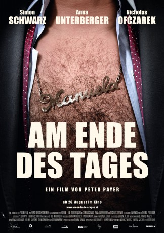

#5916 Am Ende des Tages
Alternativ: What a Difference a Day Makes (Originaltitel)
 
 IMDB-Wertung: 6.3 / 10
IMDB-Wertung: 6.3 / 10  Metascore: 0
Metascore: 0 
The successful politician Robert is going on a romantic weekend trip with his pregnant wife Katharina as a unexpected old friend of Robert,Wolfgang suddenly appears on the surface.As he starts to stalk the couple,Roberts wife soon suspects there might be a deep dark secret between the childhood friends. On the end of the day the trip turns more and more into an nightmare.
Jahr: 2011
Dauer: 88 Minuten
FSK: 16
Land: Österreich Studio: Thim FilmTonspuren:
Untertitel:
Auflösung: 1080p (1920x1080) Größe: 6737 MB
Genre: Thriller, Drama, Krimi
Regisseur: Peter Payer
Drehbuch: Brian Yorkey
Soundtrack:
Darsteller:
- Nicholas Ofczarek als Wolfgang
 Simon Schwarz als Robert Janacek
Simon Schwarz als Robert Janacek- Carmela Achleitner als Street Singer
- Hans Peter Bruckner als Man at Camping Bus
- Ursula Scheidle als Pharmacist
- Flavio Schilly als Boy at Camping Bus
- Fritz Supper als Street Singer
- Eva Tacha-Breitling als Woman at Camping Bus
Datei: X:\2011(A-F)\Am Ende des Tages (2011, FSK16, 1920x1080).mkv seit 04.04.2017
Festplatte: HD 2010(G-Z)-2011(A-F)
 Es gibt insgesamt 86 Filme in der Gruppe '2011(A-F)'
Es gibt insgesamt 86 Filme in der Gruppe '2011(A-F)'